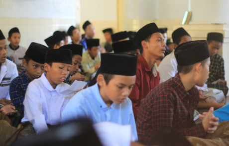

Mendidik generasi santri yang memiliki pemahaman agama yang baik, berakhlakul karimah, dan siap mengamalkan ilmunya di tengah masyarakat.
KontakPondok Pesantren Cikalama merupakan salah satu pondok pesantren tertua dan bersejarah di Kabupaten Sumedang, Jawa Barat, yang telah berdiri sejak tahun 1800-an. Nama “Cikalama” memiliki makna “cikal-nya ulama”, sebagai harapan supaya pesantren ini menjadi tempat lahirnya generasi ulama yang berilmu, berakhlak, dan mampu memberikan manfaat bagi masyarakat. Istilah ini melekat karena pesantren ini telah melahirkan banyak kyai besar dan berkontribusi penting dalam mendirikan berbagai pesantren di seluruh wilayah Jawa Barat. Hingga saat ini, Pondok Pesantren Cikalama tetap menjaga tradisi pendidikan Islam melalui kajian kitab kuning, madrasah diniyah, serta pembinaan akhlak dan kedisiplinan santri.
Menjadi pusat kaderisasi ulama perintis sesuai filosofi “Cikalnya Ulama” yang kokoh dalam ilmu agama, berakhlak mulia, serta mampu menjadi pelopor penyebaran Islam di masyarakat.

Membina santri dalam memahami ilmu agama, menjaga adab, memperkuat akhlak, serta melatih kedisiplinan dan kemandirian dalam kehidupan sehari-hari.
Pembelajaran kitab-kitab klasik sebagai dasar pendalaman ilmu agama, seperti fikih, akidah, akhlak, nahwu, dan sharaf.
Program pendidikan agama harian untuk membentuk pemahaman keislaman, kedisiplinan, dan akhlak santri.
Pondok Pesantren Cikalama berdiri sejak tahun 1800-an dan menjadi salah satu pesantren tua yang memiliki peran penting dalam penyebaran ilmu agama di Sumedang.
Nama Cikalama memiliki makna “cikalnya ulama”, yaitu tempat lahir dan tumbuhnya para calon ulama yang membimbing masyarakat.
Pesantren ini berperan dalam menjaga tradisi keilmuan Islam, terutama melalui kajian kitab kuning, pembinaan akhlak, dan pendidikan santri.
Alamat: Dusun Cikalama RT 003 RW 010 Desa Sindangpakuon, Kecamatan Cimanggung, Kabupaten Sumedang, Jawa Barat, 45364.
Nomor Statistik Pondok Pesantren: 510032110094
Telp: 0812-2058-6478
Email: ppcikalama@gmail.com / ponpescikalama6@gmail.com